Ndinterpolator¶
RBF.beckert_wendland_c2_basis |
It implements the following formula: |
RBF.gaussian_spline |
It implements the following formula: |
RBF.inv_multi_quadratic_biharmonic_spline |
It implements the following formula: |
RBF.multi_quadratic_biharmonic_spline |
It implements the following formula: |
RBF.thin_plate_spline |
It implements the following formula: |
RBF.weights_matrix |
This method returns the following matrix: |
reconstruct_f |
Reconstruct a function by using the radial basis function approximations. |
scipy_bspline |
Construct B-Spline curve via the control points. |
-
class
RBF(basis, radius)[source] Module focused on the implementation of the Radial Basis Functions interpolation technique. This technique is still based on the use of a set of parameters, the so-called control points, as for FFD, but RBF is interpolatory. Another important key point of RBF strategy relies in the way we can locate the control points: in fact, instead of FFD where control points need to be placed inside a regular lattice, with RBF we havo no more limitations. So we have the possibility to perform localized control points refiniments.
Theoretical Insight: As reference please consult M.D. Buhmann, Radial Basis Functions, volume 12 of Cambridge monographs on applied and computational mathematics. Cambridge University Press, UK, 2003. This implementation follows D. Forti and G. Rozza, Efficient geometrical parametrization techniques of interfaces for reduced order modelling: application to fluid-structure interaction coupling problems, International Journal of Computational Fluid Dynamics.
RBF shape parametrization technique is based on the definition of a map 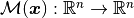, that allows the possibility of transferring data across non-matching grids and facing the dynamic mesh handling. The map introduced is defines as follows
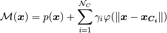
where 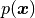 is a low_degree polynomial term, 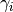 is the weight, corresponding to the a-priori selected 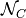 control points, associated to the
 -th
basis function, and 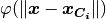 a radial function based on the Euclidean
distance between the control points position 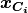
and
-th
basis function, and 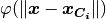 a radial function based on the Euclidean
distance between the control points position 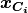
and  . A radial basis function, generally, is a
real-valued function whose value depends only on the distance from the
origin, so that 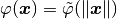.
. A radial basis function, generally, is a
real-valued function whose value depends only on the distance from the
origin, so that 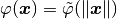.The matrix version of the formula above is:
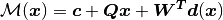
The idea is that after the computation of the weights and the polynomial terms from the coordinates of the control points before and after the deformation, we can deform all the points of the mesh accordingly. Among the most common used radial basis functions for modelling 2D and 3D shapes, we consider Gaussian splines, Multi- uadratic biharmonic splines, Inverted multi-quadratic biharmonic splines, Thin-plate splines, Beckert and Wendland
 basis all
defined and implemented below.
basis all
defined and implemented below.Parameters: -
static
beckert_wendland_c2_basis(X, r)[source] It implements the following formula:
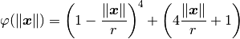
Parameters: - X (numpy.ndarray) – l2-norm between given inputs of a function and the locations to perform rbf approximation to that function.
- r (float) – smoothing length, also called the cut-off radius.
Returns: result: the result of the formula above.
Return type:
-
static
gaussian_spline(X, r)[source] It implements the following formula:

Parameters: - X (numpy.ndarray) – l2-norm between given inputs of a function and the locations to perform rbf approximation to that function.
- r (float) – smoothing length, also called the cut-off radius.
Returns: result: the result of the formula above.
Return type:
-
static
inv_multi_quadratic_biharmonic_spline(X, r)[source] It implements the following formula:
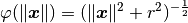
Parameters: - X (numpy.ndarray) – l2-norm between given inputs of a function and the locations to perform rbf approximation to that function.
- r (float) – smoothing length, also called the cut-off radius.
Returns: result: the result of the formula above.
Return type:
-
static
multi_quadratic_biharmonic_spline(X, r)[source] It implements the following formula:
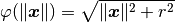
Parameters: - X (numpy.ndarray) – l2-norm between given inputs of a function and the locations to perform rbf approximation to that function.
- r (float) – smoothing length, also called the cut-off radius.
Returns: result: the result of the formula above.
Return type:
-
static
thin_plate_spline(X, r)[source] It implements the following formula:
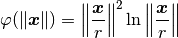
Parameters: - X (numpy.ndarray) – l2-norm between given inputs of a function and the locations to perform rbf approximation to that function.
- r (float) – smoothing length, also called the cut-off radius.
Returns: result: the result of the formula above.
Return type:
-
weights_matrix(X1, X2)[source] This method returns the following matrix:
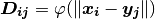
Parameters: - X1 (numpy.ndarray) – the vector x in the formula above.
- X2 (numpy.ndarray) – the vector y in the formula above.
Returns: matrix: the matrix D.
Return type:
-
static
-
reconstruct_f(original_input, original_output, rbf_input, rbf_output, basis, radius)[source] Reconstruct a function by using the radial basis function approximations.
Parameters: - original_input (array_like) – the original values of function inputs.
- original_output (array_like) – the original values of function output.
- rbf_input (array_like) – the input data for RBF approximation.
- rbf_output (array_like) – the array elements to be updated with the RBF interpolated outputs after the approximation.
- basis (string) – radial basis function.
- radius (float) – smoothing length, also called the cut-off radius.
Example: >>> import numpy as np >>> from bladex.ndinterpolator import reconstruct_f >>> x = np.arange(10) >>> y = np.square(x) >>> radius = 10 >>> n_interp = 50 >>> x_rbf = np.linspace(x[0], x[-1], num=n_interp) >>> y_rbf = np.zeros(n_interp) >>> reconstruct_f(original_input=x, original_output=y, rbf_input=x_rbf, rbf_output=y_rbf, radius=radius, basis='beckert_wendland_c2_basis')